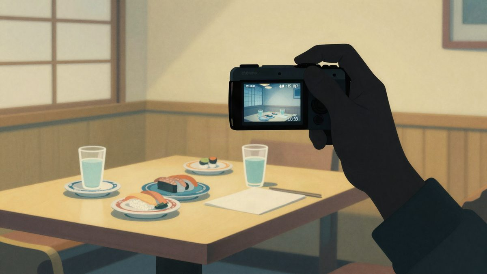

Twitch streamer Lacy u Tokiju zbog QR koda na stolu dobio lažne narudžbe od oko 9.500 eura

Gledatelji američkog Twitch strimera Lacyja poslali su na njegov stol u tokijskom restoranu velik broj narudžbi preko QR koda koji se vidio u streamu. Ukupni iznos bio je oko 1,6 milijuna jena, a restoran navodno naplaćuje samo ono što je stvarno potrošeno.
Američki Twitch streamer Lacy 28. listopada streamao je večeru u tokijskom restoranu. Kamera je slučajno snimila QR kod za naručivanje s mobitela, a gledatelji su preko poveznice s istim brojem stola poslali velik broj narudžbi. Konobar je došao pitati je li Lacy stvarno naručio otprilike 20 pića. Tek tada je Lacy primijetio da se nešto događa.
Lacy je u streamu rekao da mu je konobar prvo donio račun od oko 500.000 jena, a zatim i druge račune. Ukupno je, kaže, bilo oko 1,6 milijuna jena (oko 9.500 eura). Mislio je da će morati platiti gotovo 12.000 dolara. Tvrdi i da je kuhinja već pripremila nekoliko tanjura dodatne hrane. Gledatelje je kritizirao jer su se zabavljali na račun osoblja i stvorili mu dodatan posao. Rekao je da je ponudio da plati, a da su višak hrane podijelili drugim gostima.
Restoran: naplaćeno samo stvarno potrošeno
Dexerto citira odgovor koji je navodno objavio restoran Zauo Shibuya. U njemu stoji da je netko treći preko sustava za naručivanje poslao neovlaštene narudžbe, a da osoblje narudžbe provjerava s gostima i naplaćuje samo ono što su stvarno konzumirali. Isprva su, navodno, morali pretpostaviti da su narudžbe prave pa su dio jela pripremili. Hrana koju gosti nisu dobili na kraju je bačena. Odgovor restorana kruži uglavnom kao screenshotovi na društvenim mrežama, pa izvorna objava nije provjerena.
Lacy je kasnije objasnio da zbog jezične barijere doista nije znao kolika je stvarna obveza i da je mislio da mora platiti oko 12.000 dolara. Nakon nastavka streama i dalje je nervozno govorio o golemom računu, pa se čak i šalio na tu temu. Kad je saznao da ne mora platiti sve narudžbe, to nije odmah javno ispravio, zbog čega se 29. listopada ispričao. Kaže da je na kraju platio samo dio dodatne hrane koja je već bila pripremljena. Koliko je to iznosilo, nije otkrio.
Izvor: unwire.hk
Povezani članci
 Rakuten Travel hakiran: moguće je curenje podataka do 2,6 milijuna korisnika26. listopada 2026.
Rakuten Travel hakiran: moguće je curenje podataka do 2,6 milijuna korisnika26. listopada 2026. Kineski par slao je 480.000 phishing mailova s računala skrivenog iza hladnjaka u japanskom hotelu22. listopada 2026.
Kineski par slao je 480.000 phishing mailova s računala skrivenog iza hladnjaka u japanskom hotelu22. listopada 2026. Volkswagen opoziva gotovo 72.700 električnih automobila zbog problema s baterijom21. listopada 2026.
Volkswagen opoziva gotovo 72.700 električnih automobila zbog problema s baterijom21. listopada 2026.